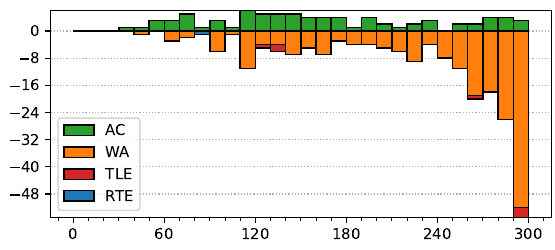

46th ICPC World Finals
Problem authors:
Arnav Sastry and the World Finals judges
Solved by 79 teams.
First solved after 33 minutes.
Shortest team solution: 1805 bytes.
Shortest judge solution: 893 bytes.

Clearly, the challenge in this problem is not about running time, but rather about how to represent the three-dimensional geometry problem in a convenient way.
On a plane, the shortest path between two points is always a line segment. So, the path will be a segment from the top of one pyramid to its base, then a segment across the ground to the base of the other pyramid, and then a segment from the base to the top of that pyramid.
We have 16 ways of selecting the faces of the two pyramids we will travel on, so we will check all of them. Now, we have two tilted triangles, each attached to the ground by the base, and we need to get from the top of one triangle to the top of the other using as short of a path as possible. The answer will be the same if we rotate each triangle around its base and flatten it out — so we now just need to find the shortest path between two points on the plane, under the condition that it passes through two specified segments.
The shortest path between two points on a plane is just a segment. So, to summarize:
Another approach is to observe that, for a pair of pyramid faces, we can parameterize the path taken by the ant by two angles θ1 and θ2. The minimum of dist(θ1, θ2) can be found using golden section or ternary search.